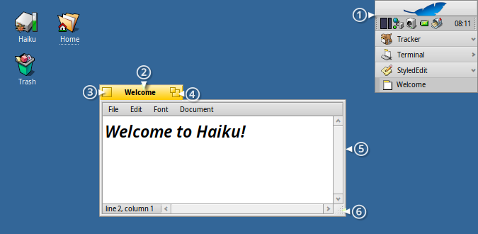
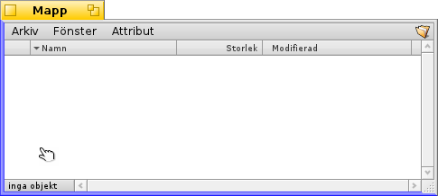
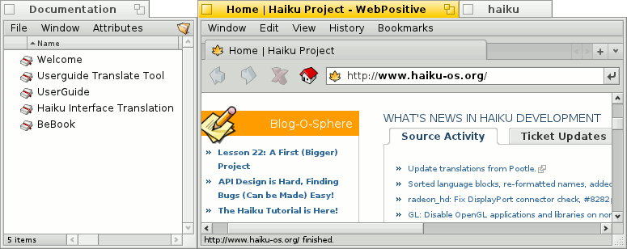
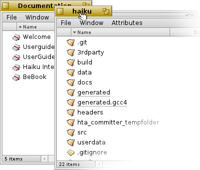
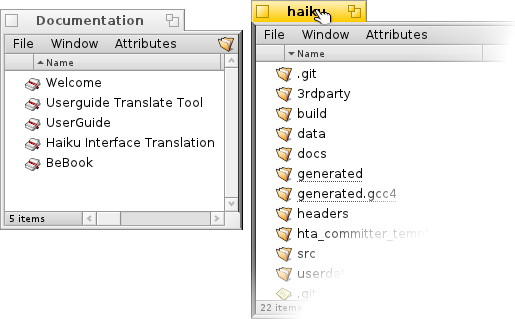
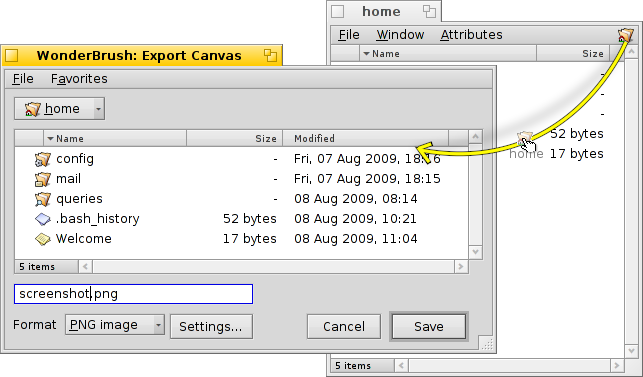
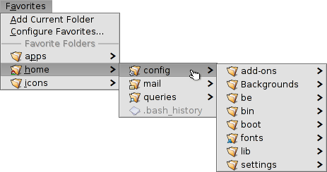
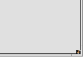

| Innehåll |
|
Ett snabbt sätt att flytta och ändra storlek på fönster Stack & Tile Dialogrutorna Öppna och Spara Replikanter |
Haiku's grafiska miljö
Haiku's graphical user interface is an integral part of the system. Unlike other Unix-like operating systems, there is no separate window manager and booting just into a command-line shell is not possible. Haiku's focus being on the desktop user, this is just not considered necessary.
Eftersom du antagligen har erfarenhet av andra grafiska miljöer hoppar vi över saker som menyer, höger-klick, drag-och-släpp med mera. I stället tar vi och tittar på vad som är unikt med Haiku's grafiska miljö.

Det finns några få saker i Haiku's grafiska miljö som kanske inte är helt självklara, och därför förtjänar en förklaring.
Deskbar är Haiku's motsvarighet till Windows startmeny, och även verktygsfält om du så vill. Avsnittet Deskbar beskriver dess funktionalitet ytterligare.
- The yellow tab offers more than just a program's name or a document's filename:
- You can move it by holding the SHIFT key while dragging it to another position, enabling you to stack a number of windows and conveniently access them by their named tab.
- You minimize a window with a double-click on its tab (or with CTRL ALT M). A such hidden window can be accessed by its entry in the Deskbar or the Twitcher.
- You can send a window to the back with a right-click on its tab (or its border).
Stängningsknapp.
The "zoom" button (or CTRL ALT Z). In most applications, this will expand a window to maximum size without obscuring the Deskbar (hold SHIFT to cover the Deskbar as well). It doesn't have to, however. Tracker windows, for example, will resize to best fit the contents.
The window border. Left-dragging moves the window, right-dragging resizes.
The resize corner.
 Ett snabbt sätt att flytta och ändra storlek på fönster
Ett snabbt sätt att flytta och ändra storlek på fönster
För att ställa in och justera fönster är en stor del av interaktionen med
fler samtidigt utarbetade program. I stället för att rikta sig mot den
lilla gula titelflaken eller ännu mindre fönstersgräns, finns det ett mer
bekvämt sätt att skjuta ett fönster. Dessutom har storleksändringen en
ytterligare begränsning: den tillåter endast justeringar i riktningen av nedre högra hörn.
Höger-dragning av gränsen för att justera den fungerar, men
återigen måste man rikta sig noggrant.
To address these issues, Haiku provides a neat solution using the window management key combo CTRL ALT and the mouse. See also chapter Shortcuts and key combinations for more shortcuts concerning window management.

Holding down CTRL ALT will highlight the window borders nearest to the mouse pointer. Move the mouse in the direction of another border to change the target. Click and dragging with the right mouse button will resize the window along the highlighted border(s).
Hold down CTRL ALT and click and drag with the left mouse button anywhere in a window to move it around. A quick click with the right mouse button sends it to the back.
Stack & Tile
Användargränssnitt av Haiku erbjuder en unik funktion som tillåter att fönsterfunktionen utnyttjas fullt ut, fastän fönstren inte har en
helbredsgren för titeln utan en gul flaken. Det kallas "Stack & Tile".
I exemplet ovan visas ett fönster med bokmärken från Tracker som är stackat till vänster om ett WebPositive-fönster, som själva är stackat med ett annat fönster med fältet för källmapp haiku. I denna animation klickar användaren på titelflaken på de stackade fönstrena för att växlingsvis kunna bringa en eller båda till tillsyn.

Connected like this, the group of windows can be moved and resized together - a nice arrangement to work in a more project centric environment. Instead of looking for the right browser window with documentation, editor and Tracker windows and maybe a related email concerning one project you are currently working on, just stack&tile them together.
Doing the actual arranging of windows is easy: Hold down OPT while dragging a window by its tab close to another window's tab or border until it's highlighted and release the mouse button.
Stack & Tile consists of two related parts.
 | "Stacking" is putting windows on top of each other, automatically moving the yellow tabs into position. |
 | "Tiling" means gluing windows horizontally or vertically together. |
Separation is done in the same way, by holding OPT while dragging a window by its tab out of the group.
Dialogrutorna Öppna och Spara
When opening or saving a file from any application, a panel like this opens:

Det har alla de vanliga sakerna: En lista över filer i den aktuella mapp till att välja från, vid en meny med sparafunktion, en textfält för att
införa en filnamn och ett pop-up-meny för olika filformat och deras inställningar.
Du kan skriva in de översta mappar med snabbmenyer över listan över filer.
Om du redan har ett Tracker-fönster med öppen ställe för en fil, kan du enkelt dra till exempel något fil eller den mapp-representation (d.v.s. symbolen till höger i menyraden) in i panelen. Detta ändrar panelen till den nya platsen.
Kortkommandon
Flera kortkommandon i dialogrutorna för öppna och spara är samma som i Tracker. Förutom dom kommandon som också är tillgängliga via menyn, finns det några fler som kan vara bra att känna till:
| ALT N | Skapar en ny mapp. | |
| ALT E | Döpa om mapp. | |
| ALT ↑ | Öppnar överordnad mapp. | |
| ALT ↓ eller ENTER | Öppnar underordnad mapp. | |
| ALT D | Tar dig till Skrivbordet. | |
| ALT H | Tar dig till din Hem mapp. |
For keyboard shortcuts in Haiku in general, see chapter Shortcuts and key combinations.
Favoriter och senaste mapparna
The menu in open and save panels provides recently visited folders and favorite locations that you can set up yourself. As indicated by the little arrow, you can also use these locations to navigate further down the hierarchy via submenus.

To add a Favorite, you simply navigate to your destination and choose . From now on it will appear in every open/save panel. To remove a Favorite, choose and delete its entry.
All Favorites are kept in /boot/home/config/settings/Tracker/Go/. So you might as well add and remove links to files and folders there directly.
Replikanter
Replikanterna är små, självständiga delar av programmen som kan integreras i andra program. Om Deskbars alternativ till aktiveras, erkänns en replikantabel del av ett program genom dess liten gripande (normalt i högerbäckre hörnet):

Den mest synliga platsen som accepterar Replikant är Skrivbordet. Du kan enkelt dra & släppa den lilla gripningen på det och från och med då är det en del av Skrivbordet och Replikanternas ursprungliga app behöver inte startas för att den ska fungera.
Högerklickning på en Replikant-gripning erbjuder en kontextmeny att visa ursprunglig appens -fönster och att . En annan väg att ta bort en replikant från Skrivbordet är att enkelt dra & släppa den på en Paperskorg ikon.
Note: You'll have to restart Tracker to actually get rid of the Replicants on the Desktop. Probably easiest with the "" menu of ProcessController.
Exempler på replikanterade programmen är den grafiska appen ActivityMonitor, miniprogram Workspaces eller DeskCalc.